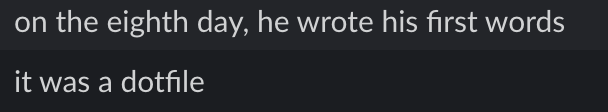

[brianchen.chen (at) alumni.utoronto.ca] / [github] / [google scholar] / [linkedin]
Right now I’m trying to teach autopilot to FSD good @ Tesla AI.
- new ho king #N12 to an Engineering Science degree at the University of Toronto
- Upside-down reinforcement learning @ TISL, co-supervised by NVIDIA research
- Infra @ Uber
- ROS for the NASA VIPER lunar rover @ Open Robotics (now Alphabet)
- Memristor ML Acceleration @ ISML
- Autonomous vehicles @ aUToronto
- Being the first engineer at a startup @ kortex (now eden.so)
- badminton :)
Other
